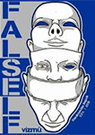
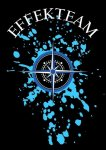

Magamról bővebben
Mi rejlik a kezdőlapon lévő bemutatkozás mögöt...
Középiskola
A Békéscsabai Vásárhelyi Pál Szakgimnáziuma és Kollégiumába jártam ahol az érettségi mellett szert tettem egy OKJ-s minősítésre mint Vízügyi technikus.
Ezen éveimet főként a közösségi életnek szenteltem és részt vettem megannyi városszintű diák programban, mint szervező vagy résztvevő.
Például: Ebben vagy akár
ebben , ahol különböző
diákok számára fontos célokért kampányoltunk sok más stábbal együtt emiatt az évi rendszerességű esemény miatt közel egy hétre "fesztivál" hangulatba borul Békéscsaba városa.
 
Miért tanultam tovább?
Tanáraim és szüleim motiváltak és vezettek rá arra hogy tanulmányaimat érdemes folytatni, ezek után az élet sorra hozta a pozitív megerősítéseket, kezdve a sikeres nyelvvizsgával,
egy pazar érettségivel és szakmai versenyeken elért sikerek. Ezek miatt a lehetőség adott volt, hogy eredményesen jelentkezzek egyetemre
Miért a BME?
Idő közben meglehetősen ambíciózus személyiség lettem és reál beállítottságom révén kifejezetten nívós és nagyra tartott egyetemet céloztam meg ahol úgy éreztem, hogy biztos a megfelelő oktatást kapom.
Ez az egyetem az alcímből is látható nem más lett számomra mint a BME.
Az egyetemet 2019 szeptemberében kezdtem viszont ez idő alatt is hatalmasat változtatott az életemen csak úgy mint az életszemléletemen.